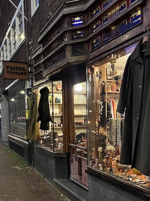
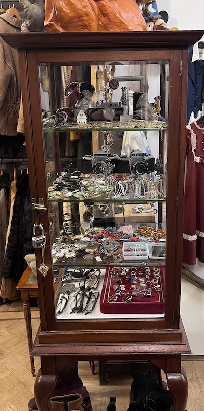
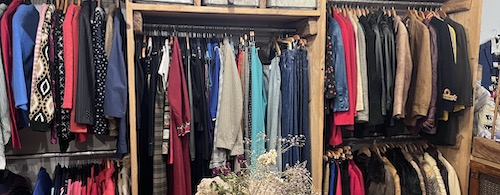
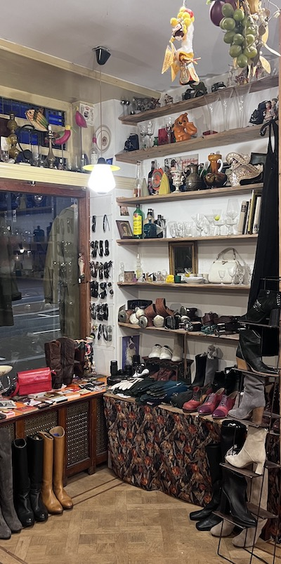

Het gezelligste vintagewinkeltje van Amsterdam!
Wij zijn een duurzame vintage winkel in het hartje van Amsterdam, wij focussen ons op exclusieve oudere items die normaal je normaal niet zo snel vind. Kom gezellig een keertje langs en check ons assortiment!
Wat is er te vinden in onze winkel?


In onze winkel verkopen we van alles, niet alleen kleding maar ook allerlei vintage sieraden, glazen, accessoire en veel meer!
Goedkoper uit en voor het milieu meer buit
Natuurlijk is Vijzel Vintage ook duurzaam, door bij een vintage winkel kleding te kopen krijgt elk stuk kleding een nieuwe leven.